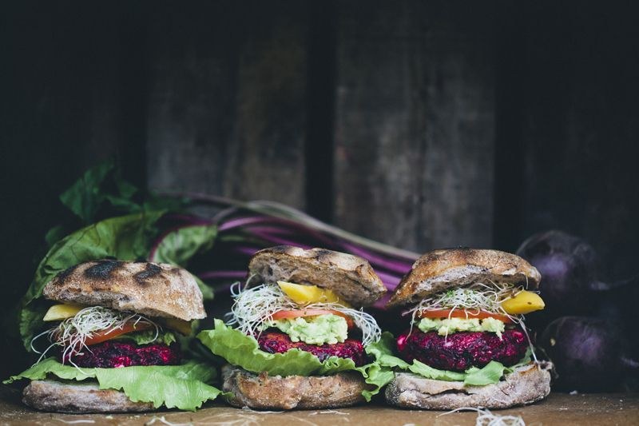

Beet and Feta Burgers

Description
Delicious vegetarian shredded beet and feta cheese burgers.
Ingredients
- 3 cup grated beets (about 4 to 5 beets)
- 1 onion
- 2 garlic cloves
- 2 tablespoon olive oil
- 2 eggs
- 1 1/2 cup rolled oats
- 7 ounce feta cheese
- 1 handful fresh basil, leaves picked
- 1 pinch sea salt and black pepper
- 2 tablespoon coconut oil, ghee or olive oil, for frying
Instructions
- Peel and grate beets, onion, and garlic on a box grater or use a food processor with the grating blades attached.
- Place the grated vegetables in a large mixing bowl.
- Add olive oil, eggs, and rolled oats and mix everything well.
- Add cheese, basil, salt, and pepper and stir to combine.
- Set aside for about 30 minutes, so the oats can soak up the liquid and the mixture sets (this step is important for the patties to hold together).
- Try shaping a patty with your hands. If the mixture is too loose, add some more oats.
- Form 6 to 8 patties with your hands.
- Grill the burgers a couple of minutes on each side or fry them in a frying pan by heating a knob of coconut oil or ghee and fry until golden on both sides.
- Serve with grilled sourdough bread and toppings of your choice (lettuce, cabbage, mango, avocado, tomatoes, sprouts, and onions).
Home